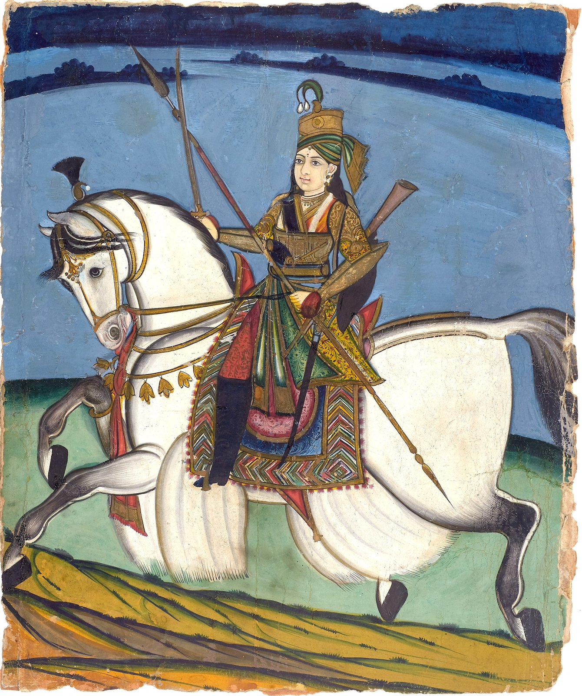
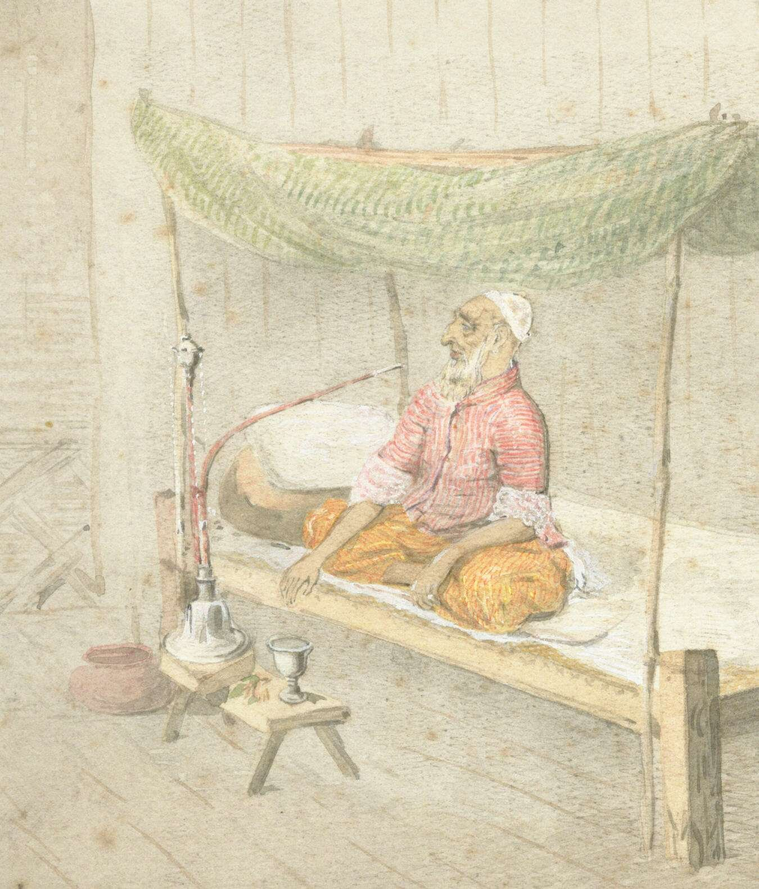
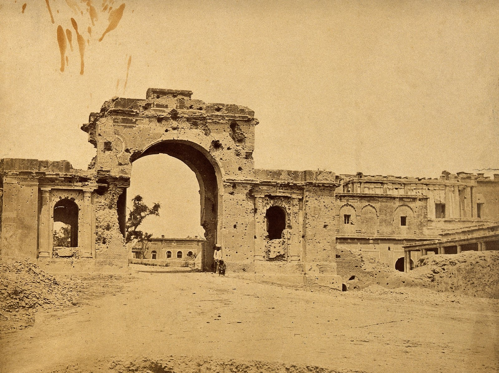

Image Title
Zoom with wheel • Drag to pan • Click reset
100%
Modern Indian History • Module 17: The Revolt of 1857
Sparked by the greased cartridges of the Enfield rifle and fueled by a century of political usurpations, economic plunder, and religious anxieties, the Revolt of 1857 shook the British empire to its foundation. Led by Rani Lakshmibai, Nana Saheb, Begum Hazrat Mahal, and Kunwar Singh, the insurrection ended the rule of the English East India Company and transferred the subcontinent directly to the British Crown.

The iconic heroine who defied Dalhousie's Doctrine of Lapse and fought to the last breath at Gwalior.
Roots of Discontent & The Enfield Rifle
The revolt was not an isolated mutiny of soldiers; it was the explosive convergence of political annexations, economic ruin, social indignity, and military grievances.
Storm Centers, Leaders & British Suppression
From Delhi to Arrah, rebel commanders held British power at bay for over a year before overwhelming European reinforcements recaptured the strongholds.

The tragic last sovereign of the Mughal line, captured at Humayun's tomb and exiled to Rangoon.

| Storm Center | Indian Leaders | British Generals | Fate of Leaders |
|---|---|---|---|
| Delhi | Bahadur Shah II & Gen. Bakht Khan | John Nicholson, Hudson | Exiled to Rangoon (died 1862) |
| Kanpur | Nana Saheb & Tatya Tope | Sir Colin Campbell | Nana escaped to Nepal; Tatya hanged (1859) |
| Lucknow | Begum Hazrat Mahal & Birjis Qadr | Sir Colin Campbell | Escaped to Nepal |
| Jhansi | Rani Lakshmibai | Sir Hugh Rose | Martyred in battle (18 June 1858) |
| Jagdishpur (Bihar) | Kunwar Singh & Amar Singh | William Taylor, Vincent Eyre | Died of battle wounds (26 April 1858) |
| Bareilly | Khan Bahadur Khan | Sir Colin Campbell | Captured and hanged |
| Allahabad & Banaras | Maulvi Liyaqat Ali | Colonel James Neill | Recaptured by British |
| Faizabad | Maulvi Ahmadullah | Colin Campbell | Killed in battle at Powayan |
Select Opinions & Historiography on 1857
Was it a mere military mutiny or India's First National War of Independence? Lucent GK summarizes the landmark perspectives of British and Indian historians.
"The Revolt of 1857 was the First War of Indian Independence."
"What began as a fight for religion ended as a war for independence."
"The so-called First National War of Independence is neither First, nor National, nor a War of Independence."
"Wholly unpatriotic and selfish Sepoy Mutiny with no native leadership and no popular support."
"A national revolt rooted in deep mistrust, not a sudden military mutiny."
"A Mohammedan conspiracy making capital of Hindu grievances."
Impact of the Revolt & The 1858 Act
The Revolt of 1857 brought the 250-year reign of the English East India Company to an end, inaugurating direct Crown governance and deep administrative reforms.
Interactive Recall & Examination Drill
Cement high-yield prelims facts on the 1857 leaders, storm centers, British suppression generals, and the 1858 Act.
Loading question...
Loading answer...
5 High-Probability Questions for UPSC, APSC & State PSCs